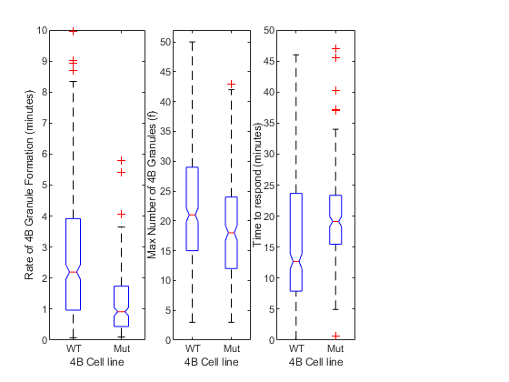

Contents
Load the model fit data for the live cell
addpath('\\albecklab.mcb.ucdavis.edu\data\code\Nick')
24h induced Wild-Type 4B Data
2022-11-03
%dataset1 = load(''); %dataset1 = dataset1.dataloc; % pull the loaded dataloc structure % 2023-05-03 dataset2 = load('\\albecklab.mcb.ucdavis.edu\Data\imageData\SG_4B\2023-05-03 4B-WT 4B-Mut Tet curve NaAsO2 curve\2023-05-03 4B-WT 4B-Mut Tet curve NaAsO2 curve_Processed.mat'); dataset2 = dataset2.dataloc; % pull the loaded dataloc structure % 2023-06-15 dataset3 = load('\\albecklab.mcb.ucdavis.edu\Data\imageData\SG_4B\2023-06-15 4b WT-Mut NaAso2 Curve\2023-06-15 4b WT-Mut NaAso2 Curve_Processed.mat'); dataset3 = dataset3.dataloc; % pull the loaded dataloc structure % 2023-06-29 dataset4 = load('\\albecklab.mcb.ucdavis.edu\Data\imageData\SG_4B\2023-06-29 4B WT vs Mut TET curve NaAsO2 curve\2023-06-29 4B WT vs Mut TET curve NaAsO2 curve_Processed.mat'); dataset4 = dataset4.dataloc; % pull the loaded dataloc structure % 2023-08-23 %dataset5 = load(''); %dataset5 = dataset5.dataloc; % pull the loaded dataloc structure
24h induced 139A mutant 4B data
2023-05-03
dataset6 = load('\\albecklab.mcb.ucdavis.edu\Data\imageData\SG_4B\2023-05-03 4B-WT 4B-Mut Tet curve NaAsO2 curve\2023-05-03 4B-WT 4B-Mut Tet curve NaAsO2 curve_Processed.mat'); dataset6 = dataset6.dataloc; % pull the loaded dataloc structure % 2023-06-15 (already loaded) % 2023-06-29 (already loaded) % 2023-08-23 (already loaded)
Make the fit models
datalocDF = makeLiveCellDataframe({dataset2,dataset4,dataset6},'subset','TET100n24t_NaAsO2125u2t');
plotme = {'NumGrans'}; %,'granspercell' plottype = {'albeck mean fit fixed f'}; % 'albeck mean fit'
plot_by_ND_forJB('treatment', datalocDF,'plottype',plottype,'channel',plotme,'looptime',3,'font_size',8)
fit the model to the dataset
[fitData2,~] = convertDatalocToModelFit({dataset2,dataset4,dataset6}, 'NumGrans');
fitData = fitData2; % work with duplicated data (for safety)
gFitData = fitData((fitData.NumGrans_rsquared > 0.8),:); % look for an r squared greater than 0.8 ?
% boxplot(gfitData.NumGrans_min_to_respond,gFitData.treatment)
Max number of grans FROM MODEL (f) versus treatment and cell line
minGrans = 3; tetTime = '-24'; ylimz = [0, 50]; % axis limits naAsO2 = '125'; subz = all([contains(gFitData.treatment,['TET at hour ', tetTime]),contains(gFitData.treatment,[naAsO2,'uM NaAsO2']),... (gFitData.NumGrans_f >= minGrans)],2); % filter for the parameters set above % subset the data subData = gFitData(subz,:); % plot all 4 as box and wisker plots figgy = figure; % plot the rate subplot(1,4,1); boxplot(subData.NumGrans_rate_in_min,subData.cell,'Notch','on'); ylim([0,10]) xticklabels({'WT','Mut'}) xlabel('4B Cell line'); ylabel('Rate of 4B Granule Formation (minutes)') % plot the max granules subplot(1,4,2); boxplot(subData.NumGrans_f,subData.cell,'Notch','on'); ylim([0,52]) xticklabels({'WT','Mut'}) xlabel('4B Cell line'); ylabel('Max Number of 4B Granules (f)') % plot the time 2 respond subplot(1,4,3); boxplot(subData.NumGrans_min_to_respond,subData.cell,'Notch','on'); xticklabels({'WT','Mut'}) ylim([0,50]) xlabel('4B Cell line'); ylabel('Time to respond (minutes)') % plot the average granule area at max f % subplot(1,4,1); % boxplot(gFitData.NumGrans_f,gFitData.cell,'Notch','on'); % ylim(ylimz) % xlabel('4B Cell line'); ylabel('f (Number of 4B Granules)') % barHold = grpstats(subData,"cell",["mean","median","sem","std"],"DataVars","NumGrans_f") % Test if Rate is significantly different btwn the 4B cell lines [~,~,statsR] = anova1(subData.NumGrans_rate_in_min,subData.cell,'off'); [resultsRate,~,~,gnamesRate] = multcompare(statsR,"CriticalValueType","dunnett",'ControlGroup',find(matches(statsR.gnames,'HeLa_eIF4BGFP')),'Display','off'); RateOfGranuleFormation = array2table(resultsRate,"VariableNames", ["Group","Control Group","Lower Limit","Difference","Upper Limit","P-value"]); RateOfGranuleFormation.("Group") = gnamesRate(RateOfGranuleFormation.("Group")); RateOfGranuleFormation.("Control Group") = gnamesRate(RateOfGranuleFormation.("Control Group")) % Test if number (f) is significantly different btwn the 4B cell lines [~,~,statsF] = anova1(subData.NumGrans_f,subData.cell,'off'); [resultsMaxG,~,~,gnamesF] = multcompare(statsF,"CriticalValueType","dunnett",'ControlGroup',find(matches(statsF.gnames,'HeLa_eIF4BGFP')),'Display','off'); MaxGranulesFormed = array2table(resultsMaxG,"VariableNames", ["Group","Control Group","Lower Limit","Difference","Upper Limit","P-value"]); MaxGranulesFormed.("Group") = gnamesF(MaxGranulesFormed.("Group")); MaxGranulesFormed.("Control Group") = gnamesF(MaxGranulesFormed.("Control Group")) % Test if time to respond is significantly different btwn the 4B cell lines [~,~,statsT2R] = anova1(subData.NumGrans_min_to_respond,subData.cell,'off'); [resultsTime2Resp,~,~,gnamesT2R] = multcompare(statsT2R,"CriticalValueType","dunnett",'ControlGroup',find(matches(statsT2R.gnames,'HeLa_eIF4BGFP')),'Display','off'); Time2Respond = array2table(resultsTime2Resp,"VariableNames", ["Group","Control Group","Lower Limit","Difference","Upper Limit","P-value"]); Time2Respond.("Group") = gnamesT2R(Time2Respond.("Group")); Time2Respond.("Control Group") = gnamesT2R(Time2Respond.("Control Group")) saveas(figgy,'\\albecklab.mcb.ucdavis.edu\data\imageData\SG_4B\Paper Figures\rate_max_t2r.fig') saveas(figgy,'\\albecklab.mcb.ucdavis.edu\data\imageData\SG_4B\Paper Figures\rate_max_t2r.svg')
RateOfGranuleFormation =
1×6 table
Group Control Group Lower Limit Difference Upper Limit P-value
__________________ _________________ ___________ __________ ___________ __________
{'HeLa_4B139AGFP'} {'HeLa_eIF4BGFP'} -2.1843 -1.7449 -1.3056 2.6845e-14
MaxGranulesFormed =
1×6 table
Group Control Group Lower Limit Difference Upper Limit P-value
__________________ _________________ ___________ __________ ___________ __________
{'HeLa_4B139AGFP'} {'HeLa_eIF4BGFP'} -5.6673 -4.0061 -2.3449 2.7141e-06
Time2Respond =
1×6 table
Group Control Group Lower Limit Difference Upper Limit P-value
__________________ _________________ ___________ __________ ___________ __________
{'HeLa_4B139AGFP'} {'HeLa_eIF4BGFP'} 3.1304 4.8595 6.5887 5.0413e-08
 pull from combined data figures
Test if average size is significantly different btwn the 4B cell lines [~,~,stats] = anova1(subData.NumGrans_f,subData.cell,'off'); [resultsTime2Resp,~,~,gnamesT2R] = multcompare(stats,"CriticalValueType","dunnett",'ControlGroup',find(matches(stats.gnames,'HeLa_eIF4BGFP')),'Display','off'); Time2Respond = array2table(resultsTime2Resp,"VariableNames", ["Group","Control Group","Lower Limit","Difference","Upper Limit","P-value"]); Time2Respond.("Group") = gnamesT2R(Time2Respond.("Group")); Time2Respond.("Control Group") = gnamesT2R(Time2Respond.("Control Group"))
% title([tetTime,'h WT4b Tet induced and all NaAsO2 Doses']) % % subz = all([contains(gFitData.treatment,['TET at hour ', tetTime]),contains(gFitData.cell,'139A'),... % (gFitData.NumGrans_f >= minGrans)],2); % figure; % boxplot(gFitData.NumGrans_f(subz),gFitData.treatment(subz)); % xlabel('treatment'); ylabel('f (Number of 4B Granules)') % ylim(ylimz) % title([tetTime,'h 139A mut Tet induced and all NaAsO2 Doses'])